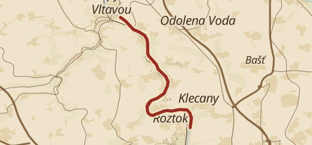

Etapa 2 ze 4 dokončena
Z Roztok do Kralup údolím pod hradišti
Pozdrav z údolí Vltavy
II
etapa
Vltavská stezka
22.–30. 10. 2026

S
© OpenStreetMap
16,7 km
ušlo
8 dní
vlastním tempem
3
zastávky
5
objevů
Sdílet pohlednici
Na etapu 3
Upozornit vás na události?
Jen dosažení místa a konec etapy. Nikdy denně.